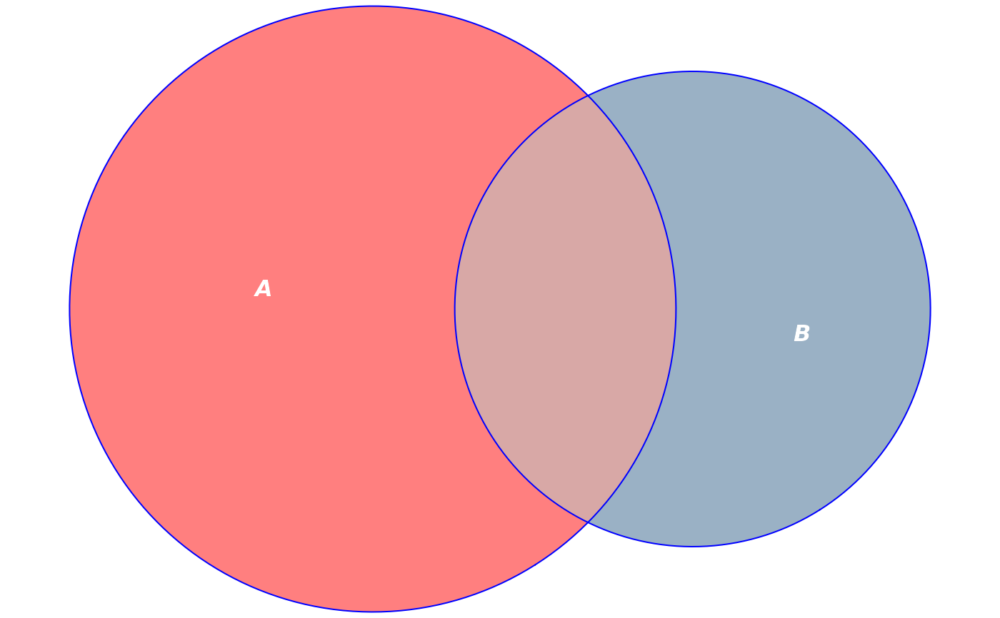
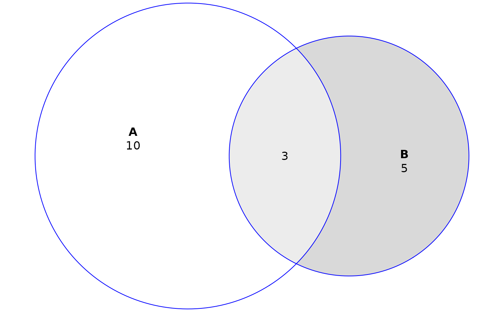
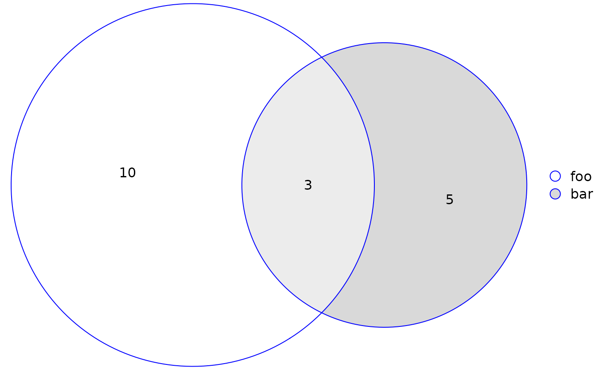
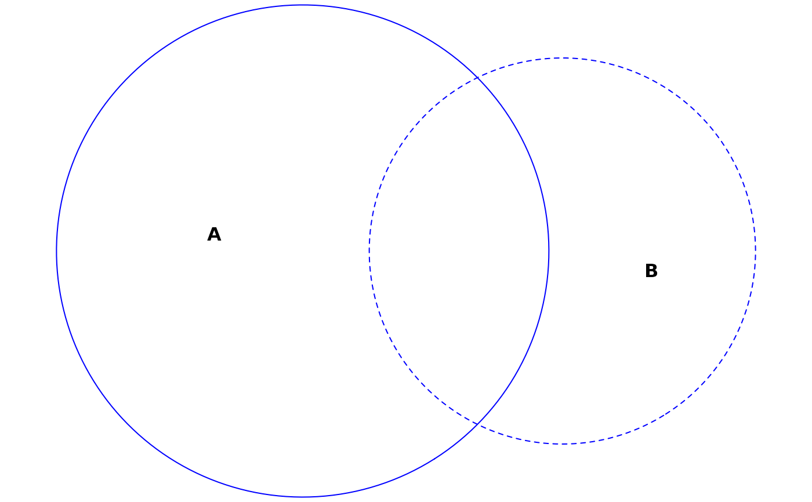
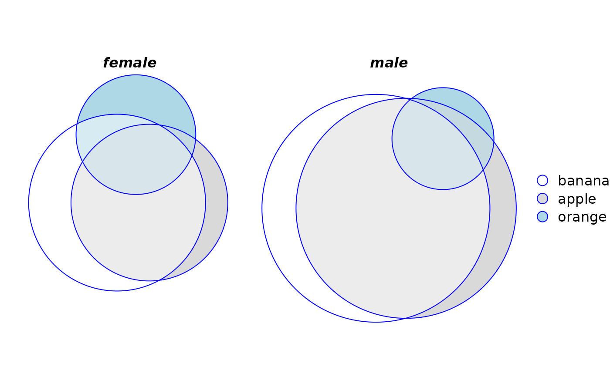

Plot diagrams fit with euler() and venn() using grid::Grid() graphics.
This
function sets up all the necessary plot parameters and computes
the geometry of the diagram. plot.eulergram(), meanwhile,
does the actual plotting of the diagram. Please see the Details section
to learn about the individual settings for each argument.
Usage
# S3 method for class 'euler'
plot(
x,
fills = TRUE,
edges = TRUE,
legend = FALSE,
labels = identical(legend, FALSE),
quantities = FALSE,
strips = NULL,
main = NULL,
n = 200L,
adjust_labels = TRUE,
...
)
# S3 method for class 'venn'
plot(
x,
fills = TRUE,
edges = TRUE,
legend = FALSE,
labels = identical(legend, FALSE),
quantities = TRUE,
strips = NULL,
main = NULL,
n = 200L,
adjust_labels = TRUE,
...
)Arguments
- x
an object of class
'euler', generated fromeuler()- fills
a logical, vector, or list of graphical parameters for the fills in the diagram. Vectors are assumed to be colors for the fills. See
grid::grid.path().- edges
a logical, vector, or list of graphical parameters for the edges in the diagram. Vectors are assumed to be colors for the edges. See
grid::grid.polyline().- legend
a logical scalar or list. If a list, the item
sidecan be used to set the location of the legend. Seegrid::grid.legend().- labels
a logical, vector, or list. Vectors are assumed to be text for the labels. See
grid::grid.text().- quantities
a logical, vector, or list. Vectors are assumed to be text for the quantities' labels, which by default are the original values in the input to
euler(). In addition to arguments that apply togrid::grid.text(), an argumenttypemay also be used which should be a combination of"counts"and"percent". The first item will be printed first and the second will be printed thereafter inside brackets. The default istype = "counts".- strips
a list, ignored unless the
'by'argument was used ineuler()- main
a title for the plot in the form of a character, expression, list or something that can be sensibly converted to a label via
grDevices::as.graphicsAnnot(). A list of length one can be provided, in which case its only element is used as the label. If a list of longer length is provided, an item named'label'must be provided (and will be used for the actual text).- n
number of vertices for the
edgesandfills- adjust_labels
a logical. If
TRUE, adjustment will be made to avoid overlaps or out-of-limits plotting of labels, quantities, and percentages.- ...
parameters to update
fillsandedgeswith and thereby a shortcut to set these parametersgrid::grid.text().
Value
Provides an object of class 'eulergram' , which is a
description of the diagram to be drawn. plot.eulergram() does the actual
drawing of the diagram.
Details
The only difference between plot.euler() and plot.venn() is that
quantities is set to TRUE by default in the latter and FALSE in
the former.
Most of the arguments to this function accept either a logical, a vector, or a list where
logical values set the attribute on or off,
vectors are shortcuts to commonly used options (see the individual parameters), and
lists enable fine-grained control, including graphical parameters as described in
grid::gpar()and control arguments that are specific to each argument.
The various grid::gpar() values that are available for each argument
are:
| fills | edges | labels | quantities | strips | legend | main | col | ||
| x | x | x | x | x | x | fill | x | ||
| alpha | x | x | x | x | x | ||||
| x | x | lty | x | ||||||
| lwd | x | lex | |||||||
| x | fontsize | x | |||||||
| x | x | x | x | cex | x | x | x | ||
| x | x | fontfamily | x | x | x | x | x | ||
| lineheight | x | x | x | x | x | font |
Defaults for these values, as well as other parameters of the plots, can
be set globally using eulerr_options().
If the diagram has been fit using the data.frame or matrix methods
and using the by argument, the plot area will be split into panels for
each combination of the one to two factors.
For users who are looking to plot their diagram using another package, all the necessary parameters can be collected if the result of this function is assigned to a variable (rather than printed to screen).
Examples
fit <- euler(c("A" = 10, "B" = 5, "A&B" = 3))
# Customize colors, remove borders, bump alpha, color labels white
plot(fit,
fills = list(fill = c("red", "steelblue4"), alpha = 0.5),
labels = list(col = "white", font = 4))

# Add quantities to the plot
plot(fit, quantities = TRUE)

# Add a custom legend and retain quantities
plot(fit, quantities = TRUE, legend = list(labels = c("foo", "bar")))

# Plot without fills and distinguish sets with border types instead
plot(fit, fills = "transparent", lty = 1:2)

# Save plot parameters to plot using some other method
diagram_description <- plot(fit)
# Plots using 'by' argument
plot(euler(fruits[, 1:4], by = list(sex)), legend = TRUE)
